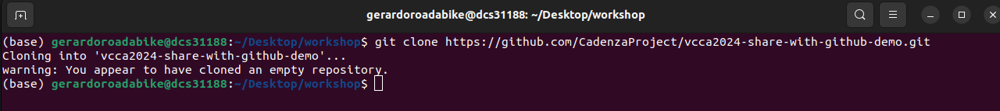
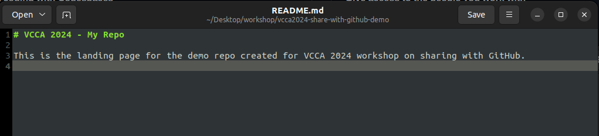
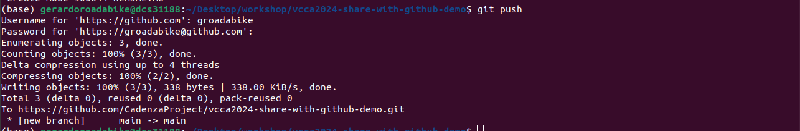
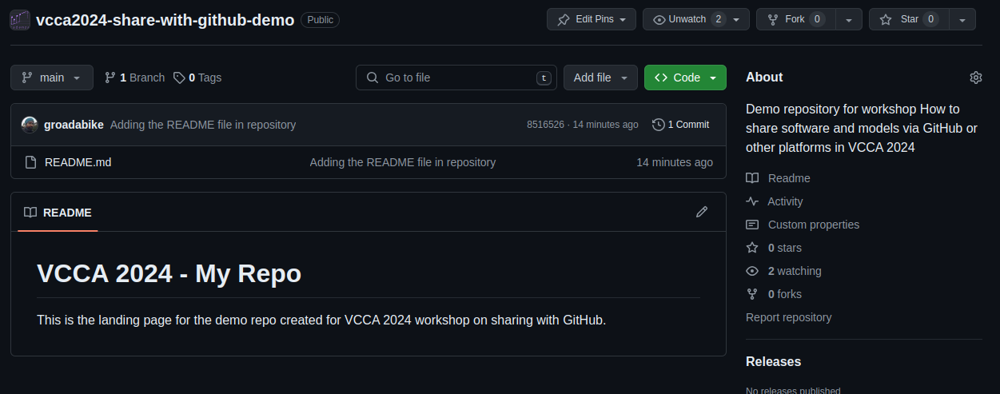

4. Making Changes#
4.1. Cloning a Repository#
To start working in your repository, you need to make a local copy of it
(a copy in your computer), which allows you to work on it offline.
This action is called cloning the repository.
The command to clone a repository with GIT is git clone.
To clone a repository, follow these steps:
In you computer, open a terminal window.
CD to the directory where you want to clone the repository.
Run the following command:
git clone <repo URL>
cd <repo name>
The URL is the URL of the repository you want to clone. You can get the link directly from GitHub
Fig. 4.1 An empty repository#
Fig. 4.2 A repository with files.#
git clone will create a directory in your computer with the same name as the repository.

Note
Don’t worry about the warning message in this case, it is just a message that the repository is empty.
4.2. Making changes to your repo#
After cloning the repository, you can make changes to it like adding files, modifying files, etc.
README.md file
One key file on all GitHub repositories is the README.md file.
This file is used to describe the repository, its content, and how to use it.
It is the first file that users see when they access the repository.
The format of this file is called Markdown. Which is a lightweight markup language with plain text formatting syntax.
A good example of this is the README.md file of the PyClarity repository.
As you can see in this file, it provides an introduction to the project, how to install it, how to use it,
and what are the current and previous challenges.
Fig. 4.3 PyClarity Readme for Clarity and Cadenza Projects#
4.3. Adding files#
We created our repository without a default README.md file.
Let’s create one now.
In your computer, inside the repository directory, create a new file named
README.md.Open the file with your favorite text editor.
Add the following content:
# VCCA 2024 - My Repo
This is the landing page for the demo repo created for VCCA 2024 workshop on sharing with GitHub.
Save the file.

Now, you have a README.md file in your local copy of your repository.
To add this file to the online repository, you need to commit the changes.
4.3.1. Committing changes#
When you make changes to your repository, you need to commit them.
A commit is a snapshot of the changes you made at a specific time.
To commit changes, follow these steps:
Open a terminal window.
CD to the directory of your repository.
Run the following command:
git add README.md
git commit -m "Add README.md file"
The git add command is used in Git, to add changes in the working directory to the staging area.
The staging area (or index) is an intermediate area where changes are gathered before they are committed to the repository.
Usage:
git add <file>: Add a specific file to the staging area. Like we did with theREADME.mdfile.git add .: Add all files in the working directory to the staging area (Note the.at the end).git add -i: This opens an interactive interface to select changes to be staged.
Now that the file is staged (in the staging area) we can commit it.
The git commit command is used in Git to save changes from the staging area to the repository.
This command creates a new commit containing the changes that have been staged,
along with a message that describes the changes.
Usage:
git commit -m "Descriptive commit message": This is the most common way to commit changes. The-mflag allows you to add a commit message directly from the command line.git commit -a -m "Commit message": The-aflag (or--all) will automatically stage any tracked,
modified files before the commit, skipping thegit addstep. However, this will not stage new (untracked) files.
Best Practices
Write Meaningful Commit Messages: The message should short describing the changes made. This helps other collaborators understand the history of changes.
Commit Often: Frequent, smaller commits are preferable over large, infrequent commits. They make it easier to track changes and find bugs.
Use Branches: When working on a new feature or bug fix, create a new branch. This keeps your work organized and separated from the main codebase until it’s ready to be merged.
4.3.2. Pushing changes#
Now is time to update our online repository with the changes we made locally.
For this, we run the git push command.
git push command is used in Git to upload local repository content to a remote repository,
by transferring the commits from your local repository to a remote one.
Usage:
git push: This command is used to push commits from your local repository to a remote repository.
Before pushing changes, make sure you have the necessary permissions to push to the repository.

4.4. How our repository looks now#
After pushing the changes, you can see the updated repository on GitHub.
